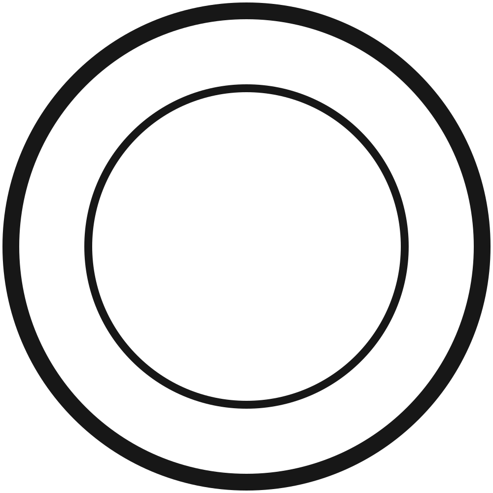
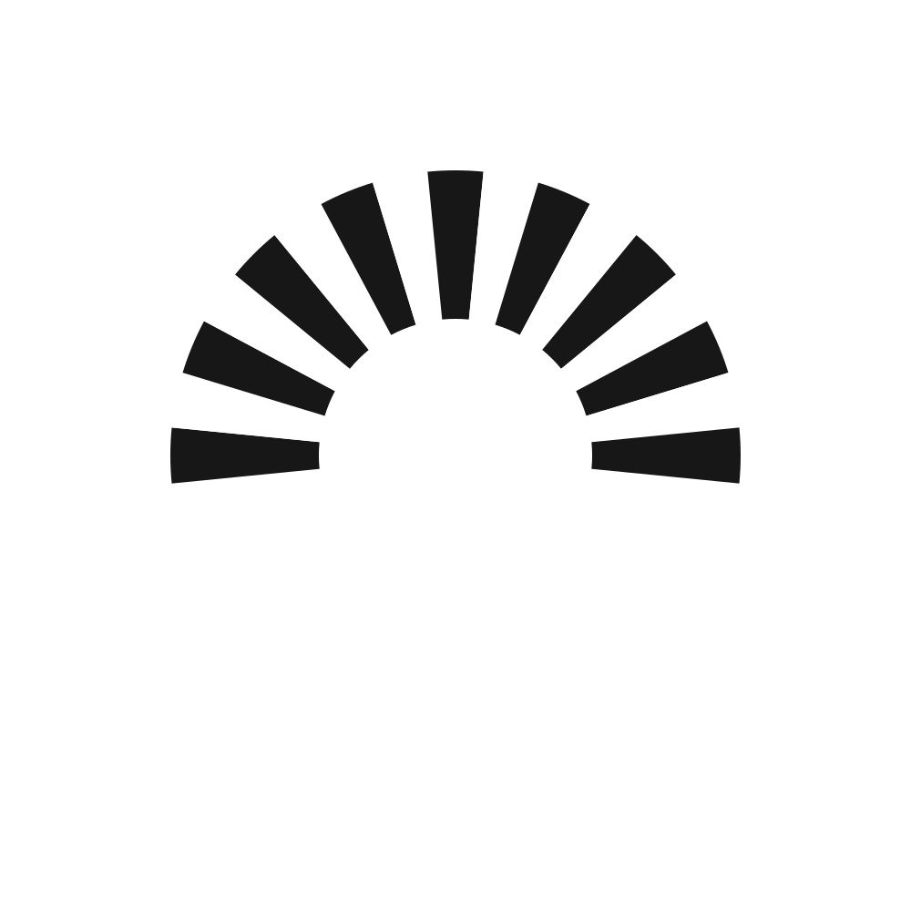

Design composition only: The separate hanging tab projects approximately 9 mm beyond the planned 100 mm body and has a 4 mm hole. The draft is shown smaller than the reference to accommodate the tab. This is not a toolpath or depth simulation.